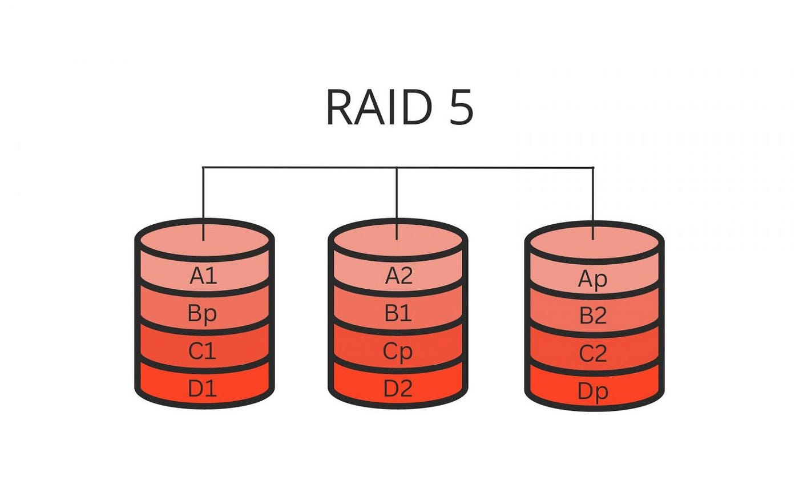

RAID
EL RAID es una eina que ens permet combinar diversos discs en una sola unitat lògica per dona redundancia a les dades. Així en cas de perdua poden recuperar. Hi han diferents tipus de raids:
-
RAID 0: Avui en dia es considera obsolet. Consisteix en dividir les dades i distribuir-les entre discs sense redundancia. El nivell de seguretat es pràcticament nul, ja que pots perdre les dades fàcilment.

-
RAID 1: Funciona amb el metode "espill" que consisteix en fer una copia exacta de les dades en un altre disc, això ens dona redundancia (es com un copia de seguretat en temps real).

-
RAID 5: Utilitza com a minim tres discs, tot i que també es pot fer amb quatre. El sistema d'emmagatzematge reparteix l'informació entre tots els discs menys a un que es l'utilitzat per la paritat, en cas de fallar un disc pots recuperar l'informació. 
-
RAID 6: El funcionament es exactament igual que l'anterior, la diferencia principal es que la paritat es guarda en dos discs.

RAID 1
En aquest primer apartat veurem com configurar un RAID1.
- EN primer lloc necessitem el paquet mdadm, que es el que ens permet instal·lar i configurar els RAIDs

-
Un cop el paquet esta instal·lat configurarem els discs amb la comanda que ja coneixem
fdiskels discs que modifiquem hauràn de cumplir la següent configuració-
-
En acabar la configuració consultarem les particions i disc de la nostra màquina i ens assegurarem de que el format tingui autodetecció de RAID Linux.

-
A continuació crearem una carpeta per fer proves, i li doanrem els permisos que es mostren a continuació.
-
A continuació donarem el format al RAID amb aquesta comanda, el que fem es basicament crear el RAID amb el nivell que es el número de RAID i després indiquem el número de dispositius i quins son.

-
Ara donarem el format d'arxius a l'array del RAID, amb la següent comanda.

-
Per comprovar que s'ha creat tot correctament utilitzarem la comanda:

-
Seguidament executarem les següents comandes per crear un fitxer de configuració per al RAID.

-
Dins del fitxer escriurem la següent linea
DEVICE /dev/sdb1 /dev/sdc1.

-
Com ja sabem per muntar permanent el RAID haurem de consigurar el fitxer fstab
-
Un cop feta la configuració reiniciem els serveis. Muntarem el disc i utilitzarem la següent comanda
update-initramfs -u -k all.
-
Després de fer tots els passos comprovarem que el RAID esta correctament configurat un cop es reinicia el sistema.

-
Crearem una serie de directoris i fitxers per fer proves
-
A continuació treurem un disc i veurem que podem seguir treballant amb les dades. Com es pot apreciar el disc que hem desmuntat es troba en estat
faulty. -
Un cop fet el pas anterior eliminarem el disc amb el modificador
-ri veurem que el seu estat passarà a serremoved. -
Igualment podrem accedir a les dades
-
Amb la mateixa comanda que hem utilitzat anteriorment amb el modificador
-aafegirem de nou el disc. Com es pot apreciar primer trigarpa una estona ja que estarà amb l'estatspare rebuildingpassat un temps si tornem a detallar el RAID veurem que es troba en estat actiu. -
Seguidament simularem un cas en el que un dels discs es trenca o te algun problema i es substituit per un de nou. Un cop hem extret el disc si fem un detail del RAID veurem que sol ens apareix un.

-
Per continuar aturarem tots els serveis i reinicaiarem el RAID toranant-lo a muntar. Veurem que les dades segueixen estant segures. I amb un detail veurem l'estat del RAID.


-
Per acabar afegirem el nou disc a la màquina i seguint la configuració del principi el muntarem i prepararem. Tal i com ha passat abans amb el disc que hem desmuntat, quan posem un disc nou l'estat al RAID passa a ser
spare rebuilding, un cop acaba, veiem que passa a actiu i que les dades segueixen allà.
-
Finalment, esborrarem el RAID de forma definitiva. Es important tindre amb compte que l'estat del superblock es permanent. Llavors haurem de seguir les comandes següents:

-
Un cop hem parat els sistemes hem de eliminar les linies que hem creat al arxiu
fstabi almdmda.conf.

-
Com ja he esmentat abans, sino eliminem del tot el superblock la RAID seguirà sense esborrar-se. Per tant les següents comandes son molt importants. Un cop executades podem fer un reinici del servei i del sistema.
RAID 5
-
En primer lloc, per fer una confiuració del RAID 5, necessitarem com a minim dos discs que en un RAID 1, per tant es moment d'afegir els discs.
-
Com anteriorment ja hem vist com configurar els discs per muntar-los, ho farem igual per als quatre discs.
-
Amb la comanda
fdisk -lcomprovarem que tot estigui correctament.
-
Seugint els pasos igual que abans ara crearem la carpeta del RAID, el RAID, l'arxiu de configuració i finalment muntarem la carpeta. Per ara son els mateixos procediments que amb el RAID 1. la diferencia principal es a la comanda:
-
Un cop establerta la configuració el que farem serà reiniciar el sistema i comprovar l'estat del RAID amb la comanda detail.
-
Per fer proves crearem un fitxer i un directori tal com hem fet abans.
-
La primera prova igual que l'anterior serà desactivar un dels discs i comprovar el funcionament.
-
Com s'aprecia la informació es pot consultar igualment. També podem veure que el comportament dels discs es igual amb tots els RAID per tant la diferencia radica en quants discs necessita el RAID per funcionar i per això descativarem i borrarem els discs fins veure que la informació no sigui visible.
El propi sistema ja ens avisa de que amb dos discs fora no podrà treballar
-
Per tant el que farem serà treure el disc "manualment".
-
Com podem veure l'estat passa a ser inactiu. En aquesta situació el que haurem de fer es col·locar un disc nou primer, formatar-lo i després recuperar el desactivat. Aquest es el cas més extrany i mes complicat. Sino tot es molt paregut o igual al RAID1.
-
Com en aquest cas sol tenim 2 disc funcionant actualment l'array no arranca i ens donarà problemes, si tenim el disc nou preparat i amb el format que tenia l'anterior el que farem serà obligar a l'array a reconstruir-se amb la seguent comanda:
-
Un cop arrancat l'array comprovem quin es el seu estat i com podem veure ja funciona pero ens segueix fallant un dels discs que hem eliminat, el sdc. Ara no hi ha cap problema ja que el RAID funciona ara sol hem de muntar la part que ens falta.
-
Com bé sabem, tornem a afegir el disc que ens falta, el c, al RAID. Després comprovarem l'estat del RAID i de les dades.
-
En conclusió els errors son pareguts entre el RAID1 i RAID5. I si mai tenim el problema de que l'array no inicia la comanda clau un cop tenim els discs amb el seu format es: -
Per acabar desmuntarem el RAID5 com hem fet abans, seguint els passos de la captura.
I reiniciant el sistema.